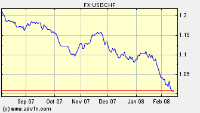
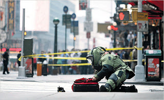

A few nights ago, at the end of a day devoted to productive and pacific pursuits, after you had surrendered to a few hours of well-earned sleep, the people who presume to rule us raided your bank accounts.
No, I'm not referring to the Regime's ability to monitor your financial transactions, a power displayed to dramatic effect in the prostitution sting that ended Eliot Spitzer's lamentable career. Yes, you've probably been subject to totalitarian scrutiny of that sort at some point as well, but that's a topic for another occasion.
Right now, I'm talking about the Federal Reserve's most recent wealth redistribution plan, through which hundreds of billions of "dollars" will be created in an effort to stave off bank failures -- an effort that will not succeed.
To create this so-called "money," the Fed has to steal the value of what each of us has earned, saved, or invested.
Imagine how outraged you would be to learn that a thief had stolen your identity and used it to siphon your savings in small, subtle increments, until you and your family are driven into destitution.


The dollar's value vs. Swiss franc over the past six months: When the dollar's trend-line begins to look like an Alpine ski run, you know things are getting nasty.
This is exactly what the Fed and the Regime it serves are doing to you right now -- bleeding your wealth with silent implacability. Over the past six months alone, the "dollar" has shed one-fifth of its value (as measured against other currencies). Run the math, which is simple enough for even Sean Hannity to understand (assuming that we s-p-e-a-k r-e-a-l-l-y s-l-o-w-l-y and illustrate our points with pretty pictures): At that rate, by mid-2010, the dollar would be entirely worthless.
But there's no reason to assume that the decline will continue at its present rate. None at all.
Things will only get worse from here.
Some analysts keep warning that the dollar may abdicate its role as the world's reserve currency, thus mimicking the trajectory of the last global imperial currency, the British pound.
These warnings were timely half a decade ago. They are badly out of date now: The dollar has already lost that status for merchants in Manhattan, investors and entrepreneurs in India, peasants in Bolivia, businessmen in Brazil ... that is, in the view of people who work, earn, save, and invest and have the option of conducting their affairs in currencies other than the Hegemon's increasingly worthless fiat scrip.
At least they burn: A German housewife finds a suitable use for her country's useless currency during the hyperinflation of 1923. Some have suggested at least one other possible use for fiat currency, but unfortunately it's neither soft nor absorbent enough.

James Howard Kunstler, whose blog is as indispensable as its tragically appropriate name is unpronounceable in polite company, dispels the booming, buzzing confusion and lays bare the stark reality of our predicament:
"The US faces a pretty stark choice right now: it can let the losers take their losses -- both the big institutions who created and traded in fraudulent securities, and all the "little guys" who borrowed too much money trying to get rich quick, or trying to live like the millionaires they see on TV. We can let them go down, and suffer the consequences of their bad choices (and maybe prosecute some of the culpable bankers and corporate executives); or, in an effort to let these losers off the hook we can wreck the whole machinery of capital by making our medium-of-exchange worthless."
"The people in charge -- both in and out of government -- can't face the losses, so for now they've apparently decided to wreck the currency," he concludes.
Those people know what they're doing, and they understand the inevitable result. Alan Greenspan, who deserves to taken to the Great Pit of Carkoon and there be fed to the Sarlacc,**
has admitted that the economy he manipulated for decades is headed "over a cliff" (which, if you'll forgive me for belaboring a point, is where Greenspan should be headed -- right over a cliff and into the remorseless beak of the all-powerful Sarlacc).
A few weeks ago Greenspan advised Arab investors to flee from the dollar he had debauched. The course being followed by his successor, Ben "Auto-Gyro" Benanke, is intended to insulate the wealthiest and best-connected members of the corporatist elite while exposing the rest of us to ruin.

"I shall leave you as they left Weimar Germany: Marooned in a dead economy ... buried beneath inflated currency..."
"BERNANNNNNNNKEEE!"
Why aren't we incensed by this? Where are the rivulets of rage that would eventually coalesce into one mighty, cleansing flood of fury?
Sure, Americans get pissed whenever they see the price of gas vaulting to new highs, or find that their grocery bill has suddenly and dramatically put on weight. They get bent out of shape when they go to the local Big Box Mart and find that the promised "low prices" are suddenly steeper than they expected. They're increasingly anxious with each passing month, as the essentials of living become increasingly expensive, despite soothing assurances from our rulers that "inflation" is negligible.


Sure, we're permitted --nay, encouraged -- to worry about stuff like this: A bomb disposal officer inspects a backpack accidentally abandoned near Wall Street. We have the Regime's permission to take alarm over "threats" of this kind, as it suffocates our liberties and obliterates our wealth.
And as the American middle class founders in debt, the ruling caste has never done better.
Consider the job performance of Congress since 2001. Through a combination of native corruption and emasculated deference to an overtly dictatorial Chief Executive, Congress has created the most imponderable government debt in history. It has permitted our nation to become mired in two distant wars of attrition, with a final estimated price tag of something in excess of $3 trillion. It has annihilated the Bill of Rights and common law due process protections while abetting the malignant growth of a militarized garrison state. It has institutionalized torture, the ne plus ultra of tyrannical depravity.
If job performance of this kind were subject to market discipline, practically everybody on Capitol Hill (with at least one noble exception) would be reduced to selling plasma. Instead, the incumbents who have wrought this disaster enjoy almost unassailable job security, making themselves wealthy while leaving productive people impecunious. Between 2004 and 2006, the net worth of the typical Congressbeing increased by 84 percent; the median net worth of senators was $1.7 million, that of the lowly tribunes of the masses in the House a mere $675,000.
Granted, politics has always been a lucrative profession, in the worst sense of that expression. Previous republics have degenerated into kleptocratic empires and succumbed to both financial and moral. But that historic perspective should whet our outrage, rather than blunting it.
"That public men publish falsehoods Is nothing new. That America must accept Like the historic republics corruption and empire Has been known for years. Be angry at the sun for setting If these things anger you."
With all due respect -- and much of it is due -- to the author of those words, there was nothing inevitable about our nation's descent into empire. And yet ... here we stand, at the brink of utter ruin.
Why aren't we furious about this?
 On sale now!
On sale now!Dum spiro, pugno!
_____
*I use the term "dollar" here in reference to Federal Reserve Notes for the sake of conversational convenience. Since being deprived of its connection to gold, the currency issued by the Federal Reserve has ceased to be a dollar in any authentic sense.
**Within the Sarlacc's digestive tract, Greenspan would "find a new definition of pain and suffering as [he is] slowly digested over a thousand years."
50 comments:
A lot of us WERE (actually still are) pissed...
We tried to tell you all about this during the past year...
But you wouldn't listen...
You all just laughed at us, and called us "nuts"... "wackos"... "paultards"...
Well idiots, we bought Gold at $700 (some of us back when it was $300)... and we are holding on to it... cause we know in a year or two one single ounce will probably pay off a house.
Quite frankly... AmeriKa deserves EXACTLY what it has coming to it... so any of you that called us "paultards"... well, FU2.
I think I found a factual error in your blog. It was not your words that contained the factual error. It was the words you quoted from James Howard Kunstler.
When he spoke of "...making our medium-of-exchange worthless" I am sure he was talking about the US dollar.
The dollar is NOT a medium-of-exchange but is, at least for the next little while, purchasing media.
Click here for the solution
About the decline the in the dollar's reputation...
One of the most recent Pepsi bottle designs (in Canada at least) was sprinkled with pictograms, like you would find on highway signs (camping, skiing, restaraunts). I noticed that there was no "$" sign on the bottle, but there was a Euro sign.
Thanks in no small part to Mr. Greenspan, the Canadian dollar is now at par or higher against the American version.
Both are fiat currencies and therefore bad, but I can't wait to come to the States with C$10 and buy a mansion!
That is unless the Canadian gov't also decides to inflate the currency to help manufacturers and other privileged people.
The best eyeopener I know of on this subject is a move made by John Carpenter, THEY LIVE. It was made in 1980s but is so relevant today, in fact it was PROPHETIC. Stars former WWF wrestler Rowdy Roddy Piper.
It is also worth considering that a great many people -are- pissed, and have decided, rather than condemn themselves and their families by painting a target on their backs, to silently wait and sharpen the "pike in the thatch." The endgame we now approach has been in the cards for many a long year, since before many of us were born. Its' inevitablity is not certain, but it is a very near thing. They help where they can, live as free as they may, and at night they sing songs of rebellion to their children to the soft "whisk...whisk...whisk..." of steel on stone.
The hour grows late. The pieces are in motion.
While on this earth, elites like Greenspan are like Boba Fett. The Almighty Sarlacc will find his armor indigestible and vomit him or someone like him back up at us. Looking at the obvious, total depravity of man, and looking down the corridor of history, I'm compelled to agree with the poet's quote. All of this has happened before, all of it will happen again. Until the Kingdom is consummated.
Greenspan is a wretched creature. Especially since he knew better. Advocating for gold in the 60s then becoming Mr Fiat in the 90s. What a horrible human being.
Sometimes it looks like the trashing of the dollar is intentional. I wonder what the corpo-fascist bankster nazi lite military/industrial/prison complex chimps are up to. Hmmmm.....
"Why aren't we furious about this?"
William,
You answered your own question with the photo the EOD man and the backpack. This is just one more reason for me to hate the GWOT for it serves a dual purpose as a deliberate distraction from the criminal conduct here. The other purpose for GWOT, of course, is to allow the neocons to continue to “remake” the Middle East on behalf of Israel and the transnational oil companies. These traitors have really succeeded beyond their wildest dreams when it comes to fooling the general public. All that government “education” is paying massive dividends by promoting ignorance when it comes to diverting public attention from the one real threat to national security, this attack upon the middle class by the plutocrats.
When folks don't understand the Constitution and don't know their own history it is no wonder they aren't raising hell. They hear Bush say that some in Congress want the government to buy up all this bad paper and how Bush thinks this is a dumb ideal while the actions of the Fed show that is exactly what is happening.
Bin Laden is nothing more than a piker when it comes to doing damage to this nation when it comes to this sorry lot.
"Why aren't we furious about this?"
Fury and impotence are not a healthy mix.
I've moved half of what assets I have into gold....and that ain't much amigos! Wish I'd done it sooner but back then I was in no position to do so. Hindsight is oft 20/20. Can't put all of it in because I wouldn't have any funny money to live off of. But as soon as I can I'll shift more over.
I remember while visiting my uncle and aunt in Germany (the former East German half) at the very time the Iraq invasion began (I was smart enough to fly a foreign carrier) and my aunt brought out to show me some twenty dollar gold pieces, St. Gaudens, that her grandfather purchased in the 20's just to preserve what he had at the time because of runaway inflation. There, wrapped in a handkerchief, in my hands, were physical reminders of the past. They were beautiful and, nay dare I say it, prophetic because now I'm doing the same.
The question now is what to do next? When I see Diesel fuel for $4.09 I know that Bizarro world has taken over and that a clear eye and clearer heads are needed. Spoke with a banker who told me a tale of "conspiracy" folks who'd taken cash out of the bank, to the tune of 30K, and were keeping it at home because they were afraid of losing it to the government! He couldn't believe it himself that they'd do such a thing and not put it into something more tangible so just shook his head. Could have merely been a tall tale while they bought gold.
A commnet to Anonymous about "They Live"....
I LOVE that movie! It is so over the top, corny, and at the same time prophetic. Maybe that's why it was swept under the rug. When you had those special specs and took a look at money, or anything else for that matter, you got the "real" message. I figure that Bush and the rest of that lot are actually aliens here to prepare the world a-la "The Arrival". With all the hot air, bouyed by their lies, how could the earth not be transformed!
"Why aren't we incensed by this? Where are the rivulets of rage that would eventually coalesce into one mighty, cleansing flood of fury?"
First, one has to understand that inflation does not "just happen" because of "price pressures" and "cost increases" that materialize out of nowhere. It is created by the Federal Reserve. Right there, you would lose 90% of Americans, who don't learn the source of inflation in government schools. Nor do they learn that the Federal Reserve, despite its government ties, is a privately-owned banking cartel.
Second, the inflationary process itself has to be understood, which is not easy. If the Fed were literally printing hundred-dollar bills and dropping them from helicopters, the process would be obvious to all. Instead, there's a layer of abstraction: the Fed buys Treasury securities, creates corresponding reserves, and the banking system effectively lends new money into existence. Even to those who have read the textbook explanation, the process seems remote and arcane.
But forget the bankers' obscure machinery. For the man on the street, a simple rule of thumb suffices: foreign wars are inflationary. A government not restrained by a metallic standard will borrow and print the paper money to pay for the war(s). The U.S. is fighting in Iraq and Afghanistan: ergo, we have and will continue to have inflation.
If an apathetic public doesn't care about the war, why would they care about inflation? Panem et circenses is what they need. Inflation is what pays for the tawdry spectacle.
So, bearing in mind that the oil trade will probably switch off of dollars fairly soon, for those of us without the resources to buy gold (retail worker here, still in high school) is it a decent idea to at least switch a good chunk of my money (say $500 out of about $2,000) to Euros. Euros may still be fiat currency that will have its time to hyperinflate, but at least right now the Europeans seem to have some common sense about how to keep their currency from sinking like a rock.
'is it a decent idea to at least switch a good chunk of my money (say $500 out of about $2,000) to Euros?*'
Sorry, put a period instead of a question mark.
Even better than the Euro would be Swiss Francs.
If you can put $500 out of $2000 into risky Euros, albeit a tad less riskier than USD, then it would be much wiser to buy gold bullion with whatever you can afford. If it isn't "real" it simply isn't anything but a promise.
Uncle Argyle to a young William Wallace:
"First, you must learn to use this." He calmly exclaims while pointing to the young lad's forehead. "Then, I'll show you how to use THIS!" His words becoming more stern as he draws his outlawed battle sword into the air.
Actually, I think we as a people ARE furious about this - and just haven't found the right outlet . . . yet.
The last election cycle people saw their wishes betrayed blatantly. I think many - certainly myself - wanted to see Bush/Cheney impeached. And then we need to start in on the house and senate. But that 'aint gonna happen' is it . . . The system is not self correcting - it is self-reinforcing.
The options are few and the consequences dire, but our country's founders have already shown us the path . . .
Not all Republicans believe in George W. Bush. There are actually quite a few of us who supported Ron Paul.
http://www.gopcatholics.blogspot.com
"Why aren't we furious about this?"
Because you are lucky if you can even find 1 person in 100,000 that even understands what inflation is and how it is created. Ask your friends, neighbors, coworkers how fractional reserve banking works. They have no clue as this is not taught in any school.Their eyes will galze over and after about five minutes of you attempting to describe what is happening and they will usally lose interest. Heck I had one guy at work who argued with me for an hour that the dollar was still backed by gold. Even when I googled it for him on the "internets" he still would not believe me. Another guy, who drives a huge diesel pickup 30 miles each way to work, wants the government to "do something" about fuel prices. As Bill Bonner from the Daily Reckoning says "people do not get what they want, they get what they deserve". If you live your life in a fog and do not educate and protect yourself from the government, FED, bankers, et al then you deserve the keistering you will get. By the way it is still possible yet cumbersome to open a Swiss Bank account via mail. Having assets outside the country before capital controls are instituted would seem to be a prudent course of action. Remember FDR confiscated gold back in the 1930's.
I was talking with the coowner of a large trucking firm that I do with business with and was able to explain why the costs of diesel are spiking. To her credit she walked away understanding the Fed sucks and that she should cash out all her assets and put them into gold and silver.
When the Fed is directly providing the funding for the acquisition of the 5th largest investment house in the country ( which they just did with Bear Stearns) you know the end has arrived.
Mr. Briggs,
Why aren't you syndicated? This is one of the best blogs on the internet. Thanks for the entertaining and informative Kirkonomics lesson.
I think every member of our banking/financial machine should be tried and convicted of fraud. Unfortunately, those gub'mit courts aren't going to do any harm to their good ol' boys. They system is corrupt from head to toe and they should all have to narfle the Garthok without their clubs.
That's just not going to happen, so what I recommend is that people start accepting other forms of payment for the goods and services they offer. Legal tender laws will still force you to accept FRNs when they're offered, but this mess will soon be so big and out of hand, that chasing down every individual who doesn't accept worthless script will become an exercise in in futility.
If you want to know what it'll be like to be holding FRNs when the system crashes, just think Frank Burns of M*A*S*H in the episode where the Army changed the script color.
well i am furious within the limits of my blood pressure meds... i like to say i have one vote every four years to set things aright... i have to note how useless that is... there is nothing left for me but people within ear-shot which turns out to be as useless as voting... the range of opinion out there is so all over-the-map that no actionable conclusions are possible... couple that with the god-awful ignorance of the flag-wavers who check under their beds nightly for "terrorists" and discourse is hopeless... we are going to get what we collectively deserve and it won't be pretty... we are well on our way right now... the upcoming scapegoating stage will reveal when the present incoherency rouses for a focus... even that will be mis-directed and you can count on that... good luck out there...
There was a time in our country when our money was our property. It was more than just a medium of exchange or an economic instrument; it was, in a very real sense, property. When a man labored he received compensation in value equal to his work, his produce or his creativity; the money he earned was his property, just as anything else he owned. He could be assured that his money was a store of real value, he could spend it as he pleased, he could store in a bank, stuff it in his mattress or bury it in a mason jar in his back yard and it was no ones business but his own. He could be confident in the value of his money, that he could dig that Mason jar from the ground years later and still have money that kept an equivalent value as when he buried it, it was real money, sound money and it was his private property. He could be assured that his government could not confiscate it, track it or regulate it once it was in his hands; it was real property, his property. He need not worry about whether he carried a suitcase full of it from city to city, state to state or country to country because it was, without any equivocation, his property to do with what he wanted.
In our Constitutional Republic, the Founders were well aware of the potential dangers involving the nation’s currency and with that knowledge they gave us with some extremely strong admonitions concerning the value of money as property. They had experienced the results of unsound money and knew that monetary instability would not only threaten the nation’s economic freedom, but all freedoms and liberties enjoyed by the people.
In the preliminary draft of our Constitution the following words were considered: "To borrow money and emit bills [fiat currency] on the credit of the United States." The wording however, was struck from the final document and for good reason. Due to the Founders knowledge of history and even their experience with the “Continentals”, they knew the danger that emitting such bills posed to the nation and the value of the monetary property of the People. Indeed, it was more than just the monetary property Rights, but all Rights of the People that concerned the Founders; for they were aware that if the monetary system was ever corrupted that the entire system could be corrupted.
In fact, there were some in the Constitutional Convention that believed that it would be better to discard the entire Constitution instead of allowing “and emit bills” to remain. The passion concerning the ability of Congress to “emit bills” was so powerful because the Founders knew that such ability had the potential to undermine the Republic.
The cardinal rule of money as real property is essential for a Free People; absent that cardinal rule the government assumes powers that will always infringe upon the Rights of the People. As we have seen, when money is little more than an impotent instrument of exchange, monopolized and regulated by the government then the government is; apparently, free to treat it as such. The government can debase it, confiscate it, control it, track it and basically manipulate it to benefit any agenda it pleases.
Is it any wonder why the Founders were so concerned about taxation without representation? Such taxation allowed the King's government to tax the fruit of the people’s labor indiscriminately. It totally ignored their property rights and amounted to open robbery of the people’s private property. Today, we have the semblance of representation, but in reality those we elect rarely consider our consent when crafting legislation. Perhaps if we actually considered what has taken place over the last century we would once again raise our arms in revolution and cast out those who should be considered nothing more than common criminals acting for their own benefit instead of that of the people.
Through the years our financial privacy has been invaded through a system that has completely eliminated not only the property rights of our money, but also the value of our money and indeed the essence of our money itself has been detrimentally altered. Today, our money has been transformed, by certain factions in both the banking cartel and government, as an instrument of a government. A government that no longer places value upon the Rights of the People to keep their property and to use that property in ways that should be considered private and inviolate is a government operating outside the Consent of the People and the Law of the Land. Along with the Central Bankers, such a government seeks to use unsound money for purposes other than the real benefit of the People.
This government began to follow the path toward unsound money the moment it bowed down to the power of the bankers by passing the Federal Reserve Act in 1913. Since that time we have witnessed some of the most heinous acts against the People and their property in the history of this nation. Under the watch of the Federal Reserve, this country and its people suffered numerous depressions and recessions, including the Great Depression. These financial crises served the bankers and the government well, it provided opportunities to both bankers and the government unparallel in our nations history. The scope and power of the government was immensely expanded in the wake of the Great Depression and although the Federal Reserve was intended to avert such economic panics, it was the major contributor to that economic catastrophe and, indeed, as it turns out, a prime beneficiary of the economic disaster. During the Great Depression there was a tremendous amount of wealth that was transferred into the hands of not only the Central Bankers, but into the coffers of the government itself.
The Great Depression provided the government with an opportunity never before seen in this country’s history; the Crash of 29 and the ensuing depression followed the natural progression of monetary debasement and control. It also proved to be the impetus for the destruction of the property rights associated with money. It gave the government the rights over the people’s money, making it nearly impossible for a man to control or maintain his money as private property. FDR’s confiscation of gold and the government’s decision to renege on its promise to redeem its Liberty Bonds marked the beginning of the end of private money property in this country; it also marked the end of the full faith of the United States government.
By 1971, the goal of destroying private money, and the rights associated with it, was completed when the government quietly achieved a total fiat currency coup d’état and their banking partners, the Federal Reserve now had free-reign to control the monetary interests of this nation through a complete monopoly. This effectively ended all property rights the people retained in their money. Since that time, we have witnessed a drastic confiscation of the wealth of this nation by the government and its banking cartel. This confiscation is hidden from the masses of people and takes the form of inflation, draining away the purchasing power of the nation’s money and the ability of the majority of the people to maintain a stable livelihood.
Alan Greenspan once said: “In the absence of the gold standard, there is no way to protect savings from confiscation through inflation.” He should know, for under his tenure at the Federal Reserve, the people of this country have been victimized and seen their wealth robbed through that insidious form of theft called inflation. We have seen our standard of living stolen from us and with the complicity of our own government we have witnessed the demise of our property rights, and indeed all our rights. The fruit of our labors are being siphoned off by those who are no longer worthy of being called our Representative Government, they have long ago abandoned good government for abusive powers and what amounts to little more than blatant highway robbery. They have replaced our Liberty and Rights with something that is totally contingent upon our compliance under the illusion of freedom. They have transformed this nation from one of producers, manufacturers and good labor into a debt-dependent serfdom created to increase their own real wealth and powers while reducing the actual standard of living for millions of hard-working Americans.
How many times did our Founders clearly warn us of the potential for deceit and corruption associated with the unsound money, but through trickery and overt deception this nation was lead down a path that will, ultimately, prove its undoing? The Father of the Constitution, James Madison stated that unsound fiat money would destroy the necessary confidence between man and man, in public councils, industry, the moral standing of the people and the complete character of the republican government.
The last century saw a progressive disregard for the Constitution and authority, in many cases it is simply ignored by government. Such disregard should not be considered anything less than criminal, a breach of contract between the government and those who have consented to be governed under that agreement.
The people must come to understand that one of their fundamental rights is that of money property and the only way to have money property is for money to be a sound store of value, untouchable by government, separated from the influences of a monopolistic Central Bank, free of the threat of confiscation or undue taxation without appropriate Constitutional Representation. It is a Right that must be restored to the People, without such restoration there is little hope of us maintaining the few vestiges of freedom left to this People.
We stand at a time when this nation will face a great turmoil, the next few years will determine the future of our nation as the fiat monetary system follows all fiat systems before it and collapses. The fiat monetary system is on the verge of reaching the terminal point within its lifespan, it struggles under minor disruptions and small interest rate hikes; chaos that ensues during its collapse will either end in a return to sound money or overt tyranny as the government seeks to control the collapse of society.
The Right of Money Property is a revolutionary right; it stands as a bulwark against those who would assume authority over us and our future. The Right to produce, to labor in exchange of just and sound compensation without the interference of government or the overt monopolistic control of the Central Bankers is essential for a good and prosperous future. We must repudiate all extra and un-Constitutional usurpations and hold those within government accountable for such crimes.
The People must once again take an offensive stance against all those within and without the government who continue to seek to overthrow the remaining remnants of our Constitutional Republic. Our call to sacrifice is no less vital as that of our Founders, our call to defend this Constitutional Republic is no less essential for the survival of this nation.
Another excellent blog Mr. Griggs. I think Captain Obvious makes a good point. Things are going according to plan. How else would Americans ever accept an Amero as a replacement for the Dollar? Make the Dollar worthless and then offer to replace it with something "better". Watch out Canada and Mexico, there are Federal Reserve Branches coming to a city near you soon.
I believe this entire scenario unfolding before us so rapidly is purposely engineered. At least, the debasement of the currency aspects of it anyway by way of radically loosening and tightening credit. And it's also interesting, when you think about it, that folk have been thoroughly indoctrinated to think that one's "credit rating" is more important than one's savings rate. In today's world it is more important, but that reality also obviously demonstrates that our economy's engine runs almost exclusively on gargantuan debt and little hard assets, based upon gargantuan mass-consumption taking the place of production. We've become voracious consumers rather than producers.
Anyway, back from the tangent, the commoners at large were perhaps becoming increasingly noisy in their opposition to the imposition of the NAU and its attendant amero supranational currency. The New World's version of the EU and the euro. So I think this radical, short-order debasement of the currency is a calculated move by the Fed to cause the opposition to the NAU/amero to disappear and likewise the government's consolidation efforts over the next year or two, with its Canadian and Mexican cohorts' cooperation, to finally consolidate the NAU and unveil the amero easy to accomplish.
The immediate problem in attempting to carry through with this harebrained scheme, however, is that the Fed has to walk a tight rope and not debase the currency too fast by lowering interest rates too much and thereby loosening credit restraints. But, on the other hand, since our economy's engine is largely run on credit (debt) unfortunately, if they inch up interest rates too much it can kill the economic engine. Catch-22. In any event, an economy built and run upon debt will eventually choke itself out anyway. It's just that the Fed is apparently speeding the process along.
With the Fed lending 30 billion at a "super" discounted interest rate (only applicable to financial institutions) of 3.25% to JP Morgan to help finance its Bear Stearns takeover, along with a projected mega-lowering of interest rates sometime this week, it would seem that the powers that be have decided a fast-track debasement is the chosen path.
I'm totally ignorant of Wall Street economics minutiae, but certain supply/demand characteristics can be distilled by the layman from all of the gobbledygook.
By mere observation, the EU looks to be the next power center, as America fades into irrelevance and superceded by the same, which is no surprise from an eschatological (dispensationalist) viewpoint.
The surprise, for me anyway, was how exactly it was going to become superceded and made irrelevant on the world scene. I suspected economics would be involved, at least in part, with the increasing debt burden over the years and all. And, of course, historically dying empires end up with worthless currency, etc.
But, nevertheless, only when this currency debasement scheme became acute has it become clear to me that economics is going to be the major death blow to the American empire. The decadent culture itself certainly plays its part in accelerating the demise, of course, by living way beyond its means, accumulating mega assets on credit (debt). I guess folk never bother to think that there's no "free lunch" and that there's going to always be a payday someday. The longer one procrastinates, the harsher the payback in any case, but when we're forced to face the payday, no question it's going to be a hellish reap.
I reckon that harsh payday is fast approaching; it's time to jolt the populace back to reality.
Who else is tired of these tirades complaining about real problems like the declining dollar and asking us why we haven't done anything yet? If I had a nickel for every time....
Why don't YOU try proposing a course of action? Better yet, why don't YOU DO SOMETHING YOURSELF?
I'll tell you why. Because you know as well as we do that writing our congress critters accomplishes nothing, and the real answer is still politically incorrect.
That with rights come responsibilities is widely if not universally accepted. So what is the responsibility that comes with the right to keep and bear arms? It’s in the opening phrase of the Second Amendment. “Owning guns and complaining to your representatives being sufficient to the security of a free state,...” Right? Well that’s what most gun owners seem to think!
For any who wish to take seriously the responsibility that comes with the right to keep and bear arms, I’d like to invite you to explore today's militia at http://www.awrm.org. If you think owning guns or resisting on your own “when the time comes” is gonna save this country from tyranny, or even save your bacon while liberty is smothered all around you, you’re deceiving yourself. The poop has already hit the fan. The line has long since been crossed. Brazen acts of violence against innocent people by enforcement authorities are rapidly increasing in frequency and brutality. The ruling caste causes and profits by your economic demise.
If you really want to get people to do something, you should encourage people to get involved with the militia. If they don't, they'll keep complaining until even that right is taken from them.
Gold was outlawed once. It can be outlawed again. Sure, you can bury it in your back yard, but how easy will it be to use for bartering if the currency were to completely collapse? For the near term, I am thinking more about buying food and the necessary equipment to keep my family fed and safe. Eventually, gold would be good as a new currency or as backing for one, but short term I don't think many people would accept it. However,they would accept things like booze, toilet paper, medicines, food, bullets...
My apologies for disseminating misinformation on your blog. It was Charles Winchester left holding the bag of worthless "scrip" in the M*A*S*H episode, 'Change Day.' Not Ferret Face Burns.
If we cannot change the obviously corrupt relationship between the government, banks, etc. then why shouldn't we prosper from it? All of these posts seem to be from intelligent people who have/are accumulating gold and/or silver in an attempt to preserve some form of buying power. Silver is still just over $20 and gold is just north of $1000. Many places will allow you to purchase gold in multiples of grams so you don't have to scrape together the big payout for a Maple, Buffalo, Kruggerand, or a simple bar of the stuff. Gary North talks about why it would be pointless for the government to outlaw precious metals again, and I'm paraphrasing him badly when I say that 'the amount of debt is too big' for it to be worth it to the government to come after the backyard stashes. Heck yeah, we're all furious. Heck yeah, we all probably donated to Ron Paul's campaign. What else beyond protecting one's family from the impending collapse do you suggest? Loved the threads, by the way.
Where are good, honest sources for metals purchases?, Anybody have any recommendations for dealers?
Yes I agree. Why aren't you syndicated Mr. Gregs?
APMEX
One reason why too many people aren't furious is that they can't think outside of the two Party Boxes, which constantly keeps the discussion and arguments within prearranged party parameters and tired, old regurgitated talking points. It can be quite the chore to turn any number of the GOP-bots around toward accepting the constitutional ideals and limited government principles of a Ron Paul-type statesman.
One of the worst jingoistic, flag-waving imbeciles is Seattle morning talk show hostess, the corpulent Kirby Wilbur, the perfect specimen of a cheap, sit-on-my-fat-lazy-@$$ GOP party hack. He actually stated recently that Saddam had ties to Al-Qaeda, in spite of the recent media confirmation that the opposite was true. Toadies like the blob-esque Mr. Wilbur wouldn't even dare to address the approaching financial tsunami; FOX/Clear Channel have not yet given the go-ahead to discuss such reality-based topics. However, Michael Medvedev, the other wispy effeminate Seattle talk show hostess, wrote on his Townshall blog that the "Good ole' Yankee dollar" is sound as ever! I know these guys are soulless automatons, but I wonder sometimes if they are, in fact, CIA plants. You have to wonder with comments like that.
As for his softness, Kirby Wilbur, I asked him if he would ever want to debate William Grigg on the Iraq War in a neutral setting, and, after a spate of whimpering and wailing, he basically said that he was terribly afraid of Mr. Grigg. After contacting the KVI office, I was told, via phone, by one of his Capitol Hill boyfriends who provides male escort services for "Mr." Wilbur that he, in fact, had urinated on himself while considering a public debate with Mr. Grigg. Oh, well. Girls will be girls.
-John Carlson
There's a lot more to be pissed about. Like how our money and the money of others is pissed away. As in the case of Elliot Spitzer (client #9) and many more "clients" in the public trust:
The set up of of Elliot Spitzer (client #9) by MOSSAD:
Mr. Spitzer, Israel Singer, and certain officials of the World Jewish Congress had been stealing funds from the Holocaust reparations fund, money; earmarked for "holocaust Survivors".
By the time they had squandered most of the money on Whores and lavish trips to exotic locations: The "survivors" only received a pittance of the billions bilked out of a number of European countries. One case involving Israel Singer where $500,000.00 was spent on 1st class airline tickets and another
$750,000.00 a year on "Shoa business expenses" which he wrote
off as "tax deductions".
The owner of the now-infamous Emperor’s VIP Club (a MOSSAD operation) providing "services" to Spitzer and "select clientèle" in positions of public trust; was operated by Mark Michael Brener (MOSSAD operative), a Nazi Israeli national who, when arrested, was in possession of two Israeli passports and over $800,000.00 in cash.
The connection between Nazi Israel and the international trafficking of pornography, prostitution,and the sex slave business that is legal in Nazi Israel, provided the slave in question was not Jewish, is a well-founded fact.
The "Emperors Club" was a Mossad "Honey Pot" to put politicians, military brass, and judges in compromising positions for blackmail and extortion to do Nazi
Israel's bidding all the way up to the executive, judicial, and legislative branches of government.
This is not the first, only, or last endeavor of Nazi Israel to compromise our leadership or NATIONAL SECURITY.
It is time to label AIPAC an alien agent of sedition and terror. It is also time to sever all ties and end all aid to Nazi Israel and take decisive action, (including military force to end the current genocide in the Gaza Ghetto) on all UN sanctions and resolutions previously vetoed by the U.S.
Mr. Spitzer has been outed as a "Moser" (informant) because he was attempting to save himself from some very serious felony charges as a co-conspirator in the theft and laundering of hundreds of millions of dollars, intended for "holocaust survivors".
Elliot Spitzer = Atypical Nazi Zionist.
Republicae,
Kudos to you for a well written and thoughtful comment!
The commentators on this blog never cease to amaze me. The brilliant Grigg seems to attract equally sharp readers and commentators to his highly informative blog. The challenge before us is to transfer some of this acuity unto the American masses. Good luck!
The post that starts:
At 5:54 PM , Anonymous said...
is great. I'd like to get to know that guy.
OK, everybody. Turn off the TV, take a deep breath, and relax. Half the battle is keeping a cool head- read Sun Tzu. The point of many of these actions is to make you crazy and react in a fashion which defeats yourself.
We all love Ron Paul, but we really never expected the bad guys to give him a fair shake, did we?
Buy some gold, some silver, lots of lead and brass to go with your blue steel, and watch for your chance.
When law enforcement stops you- be terrified and subservient- that's what they crave almost as much as your money. Say sir a lot lest they find the uzi before you want them to know about it.
Learn as much truth as you can- all mass media is propaganda- and recognize that you can't beat the system they have erected on the old terms. Jefferson, Washington, et al today would be quietly railroaded and locked away.
Recognize that most people simply don't deserve their freedom. God gave it to them and they threw it away. You deserve yours and whatever it takes to keep it. So learn to lie to them. Learn to run for local office and protect yourself and your friends. And in the process you will realize how things really work in this fallen world.
Let the revolution begin with a thousand brilliant points of individual light.
Dear Will,
I always enjoy reading the commentators to your articles almost as much as the articles themselves. The level of insight, knowledge and reasoned thought is exceptional when compared with the usual comments on Common Dreams or other blogs.
I am struck, therefore, by the comments to this article. Not that they are not accurate and insightful, but the general tone is one of anxiety, rage, and near-incoherent despair. Your readers understand what has been done to us all, and the how and the why, but they are too emotionally distraught to phrase their thoughts coherently. And that is a pity.
Let me offer a counterview, in a sense, which is to say, a ray of hope in this darkness of despair.
I do not know how many of your readers have seen pictures of Germany after the end of the Second World War. Entire cities - almost every city, down to towns of a few thousands - lay in mountains of rubble, and millions of civilians had been killed (230,000 burned to a crisp in Dresden alone, and survivors huddling on the banks of the river machine-gunned by American planes by order of Winston Churchill. It makes Hiroshima look like a tea party.) The country was partitioned and the Russians in the East were dismantling the entire infrastructure and shipping it back to Russia. Millions upon millions of young men - sons and brothers - vanished forever in the maelstrom of war, never to be seen again, their fates unknown, the how and when and where they died forever a mystery. Millions of mothers, aunts, nephews, cousins, vanished in firestorms as entire cities burned and the streets themseves caught fire. Their fates unknown. No chance to say goodbye. A greater catastrophe and more terrible situation cannot be imagined.
You ask the old people in Europe to tell you what WWII was like, and they are speechless. Instead, they begin to weep silently. Or they may break down and start to sob. I am not making this up. I have seen it.
And yet, look at Europe today - peaceful, prosperous, bright, hopeful, modern, happy, wealthy, sane - all the shadows and nightmares blown away on the wind and almost forgotten, except for the great lesson learned - Never Again.
By comparison, the dire situation we are facing is a breeze, almost nothing, a slight discomfort only. Let us laugh at ourselves, that we should be afraid to be facing something this trivial.
Be of good cheer, all of us people out there, this too we shall overcome and there will be a new day and a new hope and a new society of civility and consideration. We will be a better people in direct proportion as we have to suffer in the coming dislocation.
Nobody will starve in America. We are a people of too much generosity and too much optimism to stand by and watch our brothers and our sisters starve to death.
We may be hungry though, and that might be a good thing. Harper's Magazine in their feature "Harper's Index" said some 5 years ago that in America each year we throw away 48 million tons of perfectly edible food - every year. So a little hunger might be very educational for us.
Nobody in America has to be homeless. We have more building footage per capita than any country in the entire world. I have faith that shelter will be found for those who need it. Unlike Europe after WWII, our cities are not in ruined piles of rubble. After Katrina, families all over this land took in strangers and gave them shelter.
I believe in us.
Courage, brothers and sisters - this too we shall overcome.
Yours sincerely,
Lemuel Gulliver.
The Fed is not inflating. Read this and do a double-think on why gold is going up and how long it will last.
http://www.garynorth.com/public/3118.cfm
Lemuel Gulliver raises an important issue in his comment, though I think he reaches the wrong conclusion.
Compared to central Europe in 1945, the U.S. is not bombed to ruins and starving. However, what allowed Europe to rebuild so quickly? A key factor was starting with a clean slate -- including no debt. That's why Europe did NOT achieve peace after WW I: the hopeless burden of German reparations ultimately generated economic turmoil (including hyperinflation in 1923) and radicalism which led directly to World War II.
Having its own continent, the U.S. is unlikely to bombed into ruins. However, an Argentine-style currency devaluation and debt default is entirely possible. Rebuilding would occur after such a debacle. It would feature much more investment in domestic manufacturing and infrastructure, and much less waste on foreign wars and foreign empire.
The shock, however, would be enormous. Remember the social fraying that occurred in the gas lines of 1979? If the shortage were far more severe in 2009, would the country hang together? Would there be another round of urban, or even suburban, riots?
The U.S. dollar's reign as the global reserve currency is over, Mr. Gulliver. That means no more "seignorage tailwind"; no more ability to finance unlimited trade deficits. Translation: if we want euros to buy oil, we'll have to EARN them by the sweat of our brows, not borrow them. And our debt service burden may be higher than the income available to service it (e.g., CDOs).
One of the impediments to postwar Europe's rebuilding was its weak, unconvertible currencies. Thanks to their severe currency controls, Brits became experts at singing and raconteuring to cadge dinner whilst touring the continent.
Are you a good song-and-dance man, Mr. Gulliver? Remember the directions to get to Carnegie Hall: PRACTICE!
Dear Anonymous,
You must be psychic. In fact, I hold both British and American passports, and in my younger days I traveled for 3-1/2 years all over Europe and Africa as a street musician. I have all the old passports, filled up with entry-exit stamps, to prove it.
Your points are well taken. You did not mention the Marshall Plan, so I will. I don't know how old you are - perhaps nobody told you about it and about how important it was to the recovery of Europe.
I was born right after the war, and can well remember what things felt like and smelled like - it was a different universe. You cannot imagine what it was like to have no concept of color television, or cell phones, or even tape recorders, much less DVDs, powered kitchen appliances, central heating, showers, or jet planes (not to even imagine jumbo jets.) To fly to the USA you would land in Shannon, then Iceland, then Newfoundland, then New York. The air had a different smell, the weather was different, the houses looked different, leisure was a visit to the black-and-white movie matinee on Saturday afternoon, which cost about 15 cents. The newsreels would come on before the feature movie, because so few people owned TV's. Many if not most people had never even been as far as the next town in their whole life. And yet, people were very happy and had no concept of their cultural poverty, as we would call it today.
Yet there is one striking thing. The people who survived WWII said afterwards it was the best time of their lives. When one never knew if one's loved ones would survive to greet the morning, goodnights and goodbyes were bittersweet, intense and full of longing. People helped their neighbors whenever and wherever possible, because everyone knew what need and loss and bereavement felt like, and everyone felt compassion for others who suffered.
Will the same happen here? I hope so, but cannot say it will. America is a much less cohesive and homogeneous society than the nations of Europe from 1940-1945. We just might disintegrate into anarchic factions. There is a lot of rage growing and bubbling below the surface, which will only increase as things get more difficult.
Whether this country survives or flies apart into fragments depends greatly on who will be our next President. If it is either Hillary or McCain, I beleieve neither of these will be equal to the task of rescuing us from anarchy. We might have preferred Ron Paul or someone else, but of the present choices, only Obama has the charisma and the credibility to re-unite the country in a common cause of overcoming an economic collapse.
Good wishes,
Lemuel Gulliver
Lemuel,
Thanks for your thoughtful reply. I now understand more about where you were coming from.
Yes, I know of the Marshall Plan, which raises an interesting point -- if the U.S. suffered a currency devaluation / depression, would Europe come to its aid with a reverse Marshall Plan?
My guess is probably not. Not for lack of charity, but because the task would be too large, the incentives not as strong, and the moral imperative less clear-cut. The lesson is that fiscal and monetary prudence must begin at home.
Did you know that a British accent can be discerned by careful reading of blog comments? Just kidding ...
Dear Anonymous,
"These are the times that try men's souls....." I hope you return to this blog to read this.
May I quote you the words of some other transplanted Englishmen, who evidently loved their adopted land as much as I do. Their words could not be more appropriate to these coming times, that will surely try our souls. For good measure, lest you think me jingoistic, I have added some words of Black Elk, another American more poetic than his European contemporaries:
========================================
Thomas Paine:
"THESE are the times that try men's souls. The summer soldier and the sunshine patriot will, in this crisis, shrink from the service of their country; but he that stands by it now, deserves the love and thanks of man and woman. Tyranny, like hell, is not easily conquered; yet we have this consolation with us, that the harder the conflict, the more glorious the triumph."
=========================================
George Washington, in his farewell address:
"THE alternate domination of one faction over another, sharpened by the spirit of revenge, natural to party dissension, which in different ages and countries has
perpetrated the most horrid enormities, is itself a frightful despotism. But this leads at length to a more formal and permanent despotism. The disorders and miseries which result gradually incline the minds of
men to seek security and repose in the absolute power of an individual; and sooner or later the chief of some prevailing faction, more able or more fortunate than his competitors, turns this disposition to the
purposes of his own elevation, on the ruins of public liberty."
=========================================
Thomas Paine again:
"NEVER, I say, had a country so many openings to happiness as this. Her setting out in life, like the rising of a fair morning, was unclouded and promising.
Her cause was good. Her principles just and liberal. Her temper serene and firm. Her conduct regulated by the nicest steps, and everything about her wore the
mark of honor. It is not every country (perhaps there is not another in the world) that can boast so fair an origin.
To see it in our power to make a world happy - to teach mankind the art of being - so to exhibit, on the theatre of the universe, a character hitherto unknown, and to have, as it were, a new creation intrusted to our hands, are honours that command reflection, and can neither be too highly estimated, nor too gratefully
received.
It would be a circumstance ever to be lamented and never to be forgotten, were a single blot, from any cause whatever, suffered to fall on a revolution, which to the end of time must be an honor to the age that accomplished it: and which has contributed more to enlighten the world, and diffuse a spirit of freedom and liberality among mankind, than any human
event (if this may be called one) that ever preceded it."
(Hear, Hear!)
-Thomas Paine: The American Crisis
New York, December 9, 1783
=========================================
Prayer of Black Elk, First American, chief of the Sioux Nation:
"O Great Spirit,
Lean to hear my feeble voice.
At the center of the sacred hoop
You have said that I should make the tree to bloom.
With tears running, O Great Spirit, my Grandfather,
With running eyes I must say
The tree has never bloomed.
Here I stand, and the tree is withered.
Again, I recall the great vision You gave me.
It may be that some little root of the sacred tree still lives.
Nourish it then,
That it may leaf
And bloom
And fill with singing birds!
Hear me, that the people may once again
Find the good road
And the shielding tree."
========================================
Amen.
Lemuel Gulliver.
Mr. Grigg,
I LOVED your work in The New American, and am saddened to find you are no longer employed there. Their, and freedom's loss. You're a great patriot, and I wish you all the best!
Ron, thanks so much for your kind words! I loved writing for The New American, as well. God bless!
What a bunch of crap--and not even half truths. Jane Fonda was a piker next to you guys. And you call yourselves Patriots?
Post a Comment